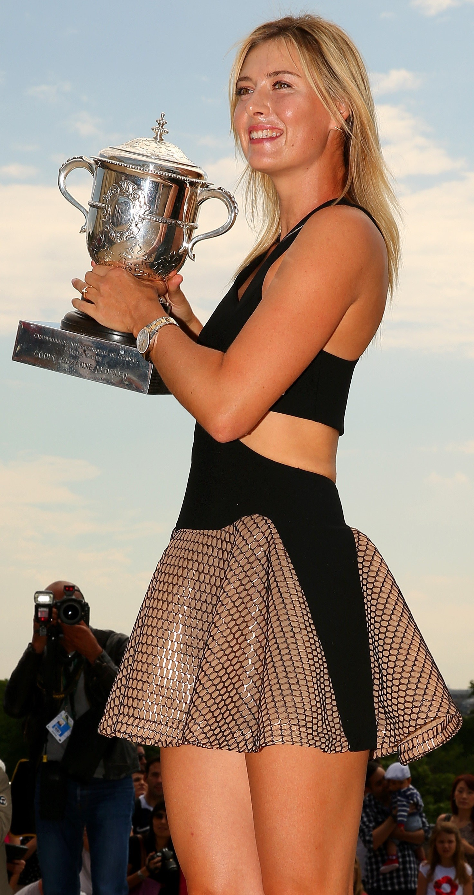

Las Mejores Jugadoras Del Mundo
Serena Jameka Williams Price
(Saginaw, Míchigan, 26 de septiembre de 1981) es una jugadora de tenis profesional estadounidense que ha ostentado la primera posición en el ranking WTA durante más de 300 semanas. Es hermana menor de otra jugadora de tenis, Venus Williams (n. 1980), quienes entre ambas poseen ocho medallas olímpicas.
Williams es considerada una de las mejores jugadoras de la historia, gracias a su gran fuerza física, mental y a sus poderosos golpes. Ha ganado un total de 39 títulos de Grand Slam: 23 de ellos individuales (récord en la era abierta, tanto entre mujeres como entre hombres), 14 en dobles femeninos (todos junto a su hermana Venus) y 2 en dobles mixtos (ambos junto a Max Mirnyi).
También ganó 23 títulos WTA Tier 1 y alcanzó 32 finales, en tanto que obtuvo cinco WTA Finals. La estadounidense finalizó primera en las temporadas 2002, 2009, 2013, 2014 y 2015, segunda en 2008 y 2016 y tercera en 2003 y 2012.
Por otra parte, Serena logró cuatro medallas de oro en los Juegos Olímpicos, una Copa Federación y dos Copa Hopman. Además, es la única tenista en haber completado el Golden Slam de carrera en las dos modalidades (individuales y dobles).

Garbiñe Muguruza Blanco
(Caracas, Venezuela, 8 de octubre de 1993) es una jugadora de tenis hispano-venezolana. Dado que tiene la doble nacionalidad (española por parte paterna y venezolana por nacimiento) eligió representar a España para disputar los torneos de la WTA y formar parte del Equipo español de la Copa Federación de Tenis de la ITF. Entre el 11 de septiembre y el 9 de octubre de 2017 fue la tenista nº 1 del ranking WTA.
El 4 de junio de 2016 se proclamó campeona de Roland Garros, primer Grand Slam de su carrera, tras vencer en la final a Serena Williams, número uno del mundo, situándose segunda en el ranking mundial de la WTA. Su mejor clasificación hasta ese momento en individuales era el puesto número 3, alcanzado en octubre de 2015, año en el que logró alcanzar la final del Campeonato de Wimbledon. Dos años después, en 2017, lograría hacerse con el título, derrotando en la final a Venus Williams. En la clasificación de dobles ha llegado hasta el puesto número 10, alcanzado el 23 de febrero de 2015. En su carrera ha ganado cuatro títulos WTAen individuales, uno de ellos categoría Premier Mandatory y tres en dobles, a nivel ITF ha ganado siete torneos individuales y uno en dobles. En 2015 recibió la medalla de bronce de la Real Orden del Mérito Deportivo. Tras un año muy efectivo, habiendo ganado el torneo de Wimbledon y el Premier 5 de Cincinnati, Garbiñe Muguruza fue nombrada Jugadora del Año por los Premios WTA.

María Yúrievna Sharápova
ruso: Мария Юрьевна Шарапова es una jugadora de tenis profesional y modelo rusa. Ganadora de los cuatro abiertos del Grand Slam, María Sharápova ha ocupado el número 1 del clasificación de la WTA durante 21 semanas. Actualmente es la N° 41 del Mundo en el ranking de la WTA.
Sharápova ha ganado hasta el momento cinco títulos individuales de Grand Slam: Wimbledon 2004, Estados Unidos 2006, Australia2008 y Roland Garros 2012 y 2014. También venció en el WTA Tour Championships 2004 y fue finalista en 2007 y 2012.
En total ha conseguido 36 títulos individuales de WTA, que incluyen 12 títulos de WTA Tier 1. Por otra parte, fue medallista de plata en la prueba individual de tenis en los Juegos Olímpicos de 2012.
En 2004, con 17 años de edad, ganó su primer Grand Slam tras vencer en la final de Wimbledon a Serena Williams por 6-1, 6-4. Dos años más tarde, en 2006, ganó su segundo al derrotar en la final del Abierto de Estados Unidos por 6-4, 6-4 a la belga y n.º 2 del mundo de entonces Justine Henin. En 2008, ganó el primer Grand Slam del año tras vencer en la final del Abierto de Australiapor 7-5, 6-3 a la serbia Ana Ivanović. En 2012, obtiene el título de Roland Garros al vencer a la italiana Sara Errani por 6-3, 6-2 y lograr así el Grand Slam de Carrera, siendo junto a Serena Williams las únicas jugadoras en activo que lo han conseguido. En el 2014, se adjudicó su segundo título de Roland Garros, y el quinto Torneo de Grand Slam de su carrera; al vencer en la definición a la rumana Simona Halep en tres sets por 6-4, 6-7, 6-4.
Sharapova es considerada una de las mejores jugadoras de su época, habiendo conseguido el Silver Slam ( los cuatro torneos de Grand Slam y una medalla de plata en los Juegos Olímpicos) y siendo una de las más jóvenes en haber ganado el campeonato de Wimbledon.
Maria Sharapova es considerada un ícono del tenis y también así de la moda, ya que ha modelado para varios diseñadores famosos y es la cara de importantes marcas.
El 7 de marzo de 2016, anunció que dio positivo en un control antidopaje por el consumo de meldonium. Por este caso, recibió una sanción de dos años por parte de la Federación Internacional de Tenis, en un comunicado difundido el 8 de junio de 2016. Sharapova anunció que apelaría la decisión. Sharapova apeló la suspensión inicial de dos años impuesta por el Programa Antidopaje de Tenis en julio, fue concedido la apelación y se redujo de dos años a 15 meses. Regresó a las canchas el 26 de abril de 2017 disputando el torneo de Stuttgart, donde llegaría a semifinales. Luego de aquello pasó por varias lesiones que le impidieron jugar varios meses. Su mejor actuación desde su regreso se vio en el US Open 2017, donde, sin ranking y con una WC, enfrentaría a la número 2 del momento Simona Halep en un partido de gran nivel y le ganaría por 6-4,4-6 y 6-3. Sharapova volvió a levantar un trofeo luego de su regreso en el torneo International de Tianjin, el que sería el 36 de su carrera profesional.